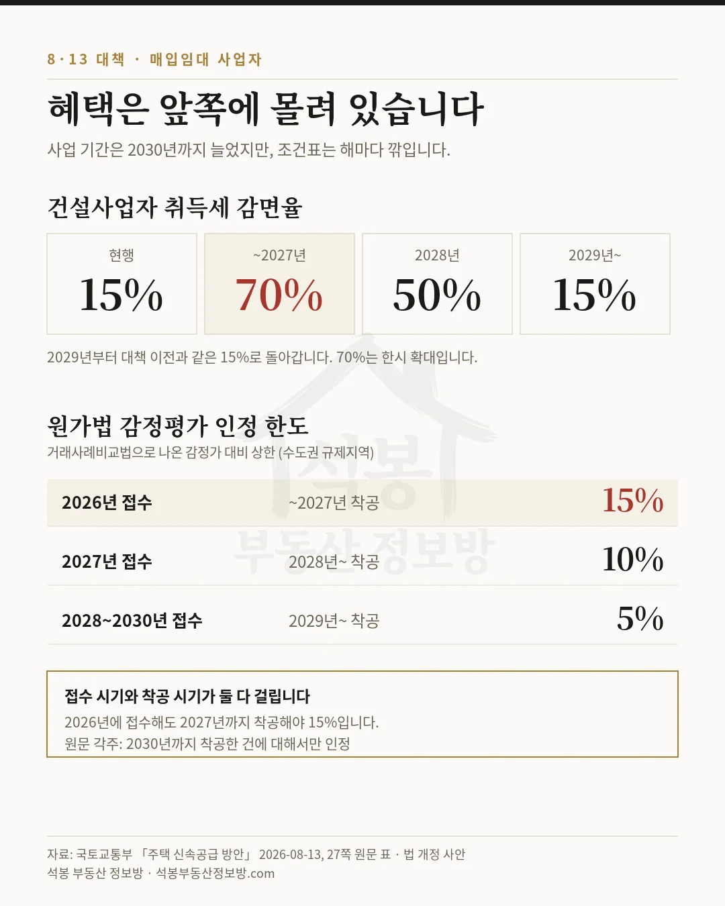
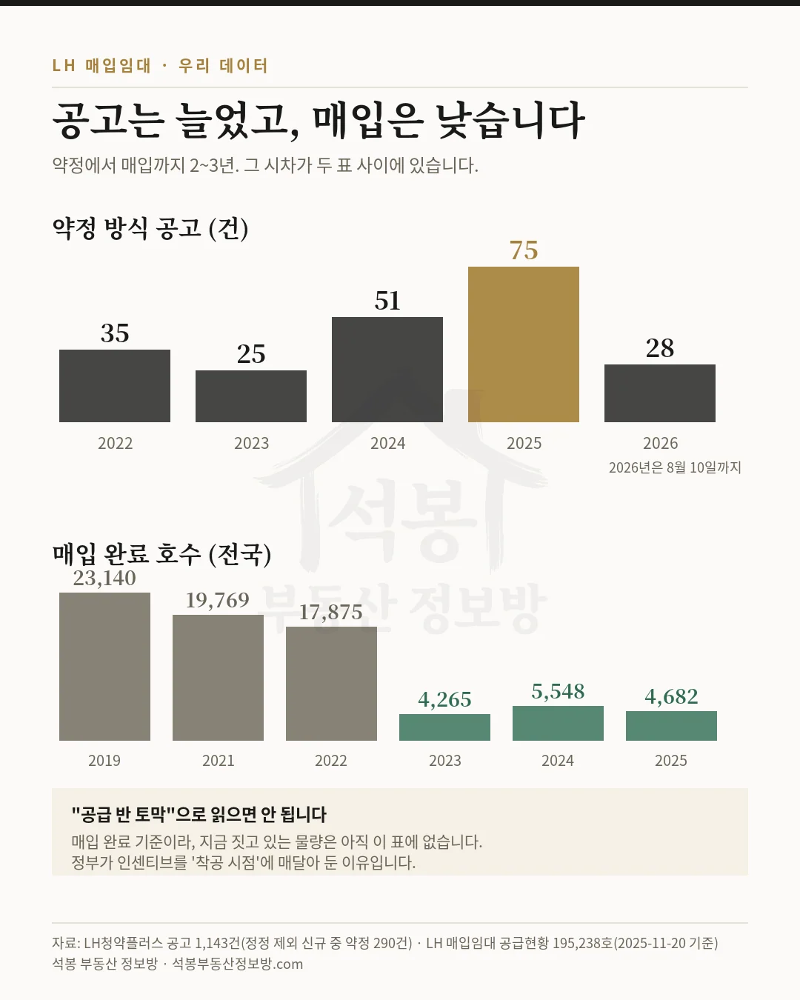
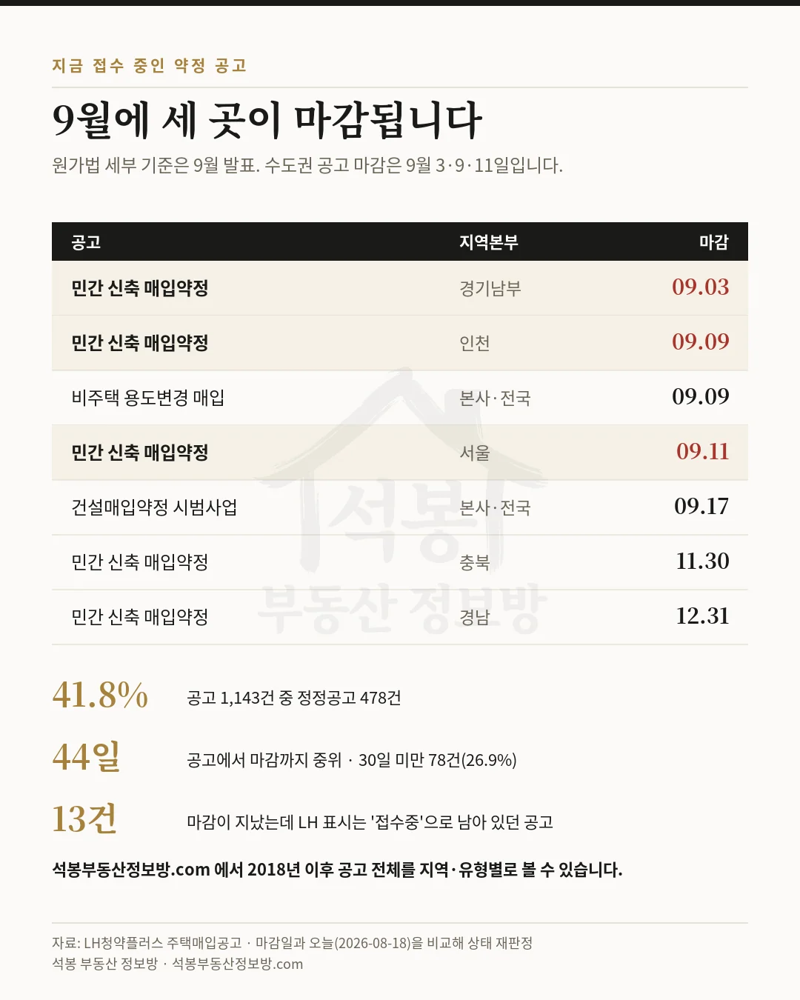
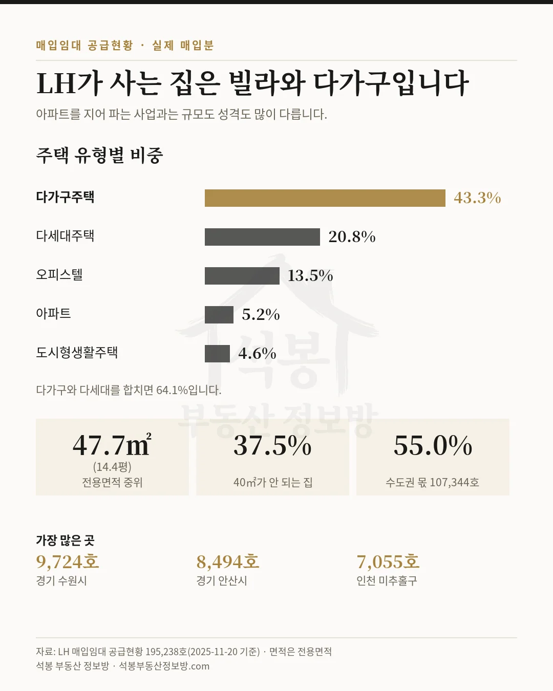

8·13 대책으로 LH 매입임대 사업이 2030년까지 열렸습니다. 목표도 커졌습니다. 그런데 국토교통부 안건 원문을 펼쳐 표를 읽어 보면, 기간이 늘어난 것과 조건이 좋아진 것은 다른 이야기였습니다. 혜택은 앞쪽에 몰려 있습니다.
먼저 사업 기간입니다. 「주택 신속공급 방안」 27쪽 제목이 이렇습니다. "LH 등 매입임대 공급 가속화, '30년까지 수도권 14만 호 착공". 직전까지는 2026~2027년 2년간 수도권 규제지역 6.6만 호였는데(5월 22일 발표, 이미 시행 중), 기간과 물량이 함께 늘었습니다. 사업이 오래 유지된다고 읽은 분들이 맞습니다.
다만 같은 쪽에 표가 두 개 붙어 있습니다. 그 표를 보면 왜 서둘러야 하는지가 나옵니다.
표 하나. 취득세 70%는 2027년까지입니다
신축 매입임대 사업의 건설사업자가 토지와 건물을 취득할 때 내는 취득세입니다. 언론에서는 "70%로 확대"만 크게 다뤘는데, 원문 표에는 앞뒤가 함께 적혀 있습니다.
| 취득 시점 | 현행 | ~2027년 | 2028년 | 2029년~ |
|---|---|---|---|---|
| 취득세 감면율 | 15% | 70% | 50% | 15% |
지금이 15%입니다. 2027년까지 취득하면 70%, 2028년은 50%, 그리고 2029년부터는 다시 15%입니다. 70%가 새 기준선이 된 것이 아니라 2년 남짓 열리는 한시 창구입니다. 표를 반대로 읽으면 이렇게 됩니다. 2029년에 취득하는 사업자는 대책 이전과 똑같은 조건입니다.
토지주 쪽도 하나 붙었습니다. 토지주가 건설사업자에게 땅을 넘길 때의 양도세 감면이 현행 10%에서 15%로 늘어납니다. 사업자가 땅을 모으는 단계에서 지주를 설득할 카드가 하나 생긴 셈입니다.

가입하시면 지역 시장조사 보고서(약식)를 2회 무료로 요청하실 수 있습니다.
표 둘. 원가법 "15%"가 무슨 뜻인지 정확히 봐야 합니다
이 표가 사업 수익성에 더 직접적입니다. 그동안 LH 매입가격은 거래사례비교법으로 매겼습니다. 주변에서 팔린 값을 기준으로 감정하는 방식이라, 공사비가 올라도 그게 매입가에 잘 반영되지 않았습니다. 8·13 대책은 수도권 규제지역에서 원가법을 함께 쓰겠다고 했습니다. 실제로 들어간 돈을 일부 인정해 준다는 뜻입니다.
여기에 한도가 걸립니다. 원문 표 제목이 「거래사례비교법 대비 원가법 감정평가 인정한도(안)」입니다. 즉 가격의 15%도, 공사비 차액의 15%도 아니라, 거래사례비교법으로 나온 감정가 대비 최대 15%까지 더 인정한다는 상한입니다.
| 구분 | 2026년 접수 (기접수분 포함) | 2027년 접수 | 2028~2030년 접수 |
|---|---|---|---|
| 착공 시기 | ~2027년 | 2028년~ | 2029년~ |
| 인정 한도 | 15% | 10% | 5% |
두 가지를 놓치기 쉽습니다. 첫째, 접수 시기와 착공 시기가 둘 다 걸립니다. 2026년에 접수했더라도 2027년까지 착공해야 15%입니다. 둘째, 원문 각주에 "2030년까지 착공한 건에 대해서만 인정"이라고 못 박혀 있습니다. 2030년이 사업의 끝선이라는 뜻이기도 하고, 그 안에 착공을 못 하면 이 조항 자체가 없다는 뜻이기도 합니다.
대책 뒤에 붙은 추진계획표(55쪽)를 보면, 원가법 병행의 후속으로 "사업자 부담 완화방안 마련"이 2026년 9월로 적혀 있습니다(국토교통부 주거복지지원과). 지금 표만으로는 내 사업지에 얼마가 더 인정되는지 계산이 안 됩니다. 계산기를 두드릴 수 있는 시점은 다음 달입니다.
혜택이 모두 '착공' 기준인 이유
취득세도, 원가법 한도도, 기준이 되는 시점은 취득과 착공입니다. 준공도 아니고 매입 완료도 아닙니다. 정부가 왜 그 지점을 잡았는지는 실제 공급 흐름을 보면 짐작이 갑니다.
저희가 LH청약플러스에서 모아 둔 주택매입공고는 2018년 11월 23일부터 2026년 8월 10일까지 1,143건입니다. 이 가운데 정정공고를 뺀 신규 공고가 665건이고, 사업자가 짓거나 고쳐서 넘기는 약정 방식 공고만 290건입니다. 연도별로 이렇게 움직였습니다.
| 연도 | 2022 | 2023 | 2024 | 2025 | 2026 (8/10까지) |
|---|---|---|---|---|---|
| 약정 방식 공고 | 35건 | 25건 | 51건 | 75건 | 28건 |
2025년 75건이 정점입니다. 공고는 분명히 늘었습니다. 그런데 LH가 실제로 매입을 끝낸 호수를 보면 방향이 다릅니다.
| 매입 완료 연도 | 2019 | 2021 | 2022 | 2023 | 2024 | 2025 |
|---|---|---|---|---|---|---|
| 매입 호수(전국) | 23,140 | 19,769 | 17,875 | 4,265 | 5,548 | 4,682 |
2022년 17,875호에서 2023년 4,265호로 내려앉았고 그 뒤로도 4~5천 호대입니다. 공고는 2025년에 가장 많았는데 매입 완료는 2023년부터 낮습니다. 이 어긋남을 "공급이 반 토막 났다"로 읽으면 안 됩니다. 약정을 맺고, 착공하고, 준공해서 LH가 사들이기까지 2~3년이 걸립니다. 최근 연도가 낮은 것은 지금 짓고 있는 물량이 아직 이 표에 안 들어왔다는 뜻일 가능성이 큽니다.
그래서 정부 입장에서 급한 지점은 계약이 아니라 착공입니다. 착공이 밀리면 2030년 안에 준공과 매입이 끝나지 않습니다. 인센티브를 착공 시점에 매달아 둔 이유가 여기 있다고 봅니다.

목표 물량이 어느 정도 규모인가
'30년까지 수도권 14만 호를 2026년부터 5년에 나누면 연 2.8만 호 착공입니다. 비교할 만한 과거 숫자를 찾아보면, LH가 가장 많이 사들이던 2019~2022년 4년의 전국 연평균 매입량이 19,932호였습니다. 연 2.8만 호는 그 1.4배입니다.
두 숫자의 기준이 다르다는 점은 짚어 두겠습니다. 목표는 '착공' 기준이고 과거 실적은 '매입 완료' 기준입니다. 그대로 나눠서 몇 배라고 말하기는 어렵습니다. 다만 규모 감각으로는, 전국에서 가장 활발하게 사들이던 시절보다 큰 물량을 수도권에서만 해내야 하는 목표입니다. 취득세를 70%까지 깎고 감정평가에 원가법을 끼워 넣는 이유를 이 숫자 옆에 두면 조금 더 선명해집니다.
지금 접수 중인 약정 공고는 7건입니다
2026년 8월 18일 기준으로, 마감일이 지나지 않은 약정 방식 공고는 7건입니다. 수도권 세 곳이 9월에 연달아 마감됩니다.
| 공고 | 지역본부 | 마감 |
|---|---|---|
| 민간 신축 매입약정 2차 | 경기남부 | 2026-09-03 |
| 민간 신축 매입약정 2차 | 인천 | 2026-09-09 |
| 비주택 용도변경 매입(약정) | 본사·전국 | 2026-09-09 |
| 민간 신축 매입약정 4차 | 서울 | 2026-09-11 |
| 건설매입약정 시범사업 | 본사·전국 | 2026-09-17 |
| 민간 신축 매입약정 | 충북 | 2026-11-30 |
| 민간 신축 매입약정 | 경남 | 2026-12-31 |
원가법 세부방안이 9월에 나오는데, 수도권 공고 마감은 9월 3일, 9일, 11일입니다. 세부 내용을 다 보고 판단하려면 이번 회차는 지나갑니다. 다음 회차를 기다리는 것도 선택이지만, 착공 시점이 2027년을 넘기면 인정 한도가 15%에서 10%로 내려갑니다. 그 사이에서 판단해야 하는 상황입니다.

공고를 찾는 일 자체도 만만치 않습니다. 저희가 모은 1,143건 중 478건(41.8%)이 정정공고입니다. 열 건 중 네 건은 한 번 이상 고쳐진다는 뜻입니다. 공고에서 마감까지 주는 기간은 중위 44일이지만, 30일이 안 되는 공고가 78건(26.9%)입니다. 게다가 LH 게시판의 상태 표시는 마감이 지나도 '접수중'으로 남아 있는 경우가 있습니다. 오늘 확인해 보니 그런 공고가 13건이었습니다.
LH가 실제로 사들인 집은 어떤 집인가
대책 문구만 보면 감이 잘 안 옵니다. LH 매입임대 공급현황(2025년 11월 20일 기준)에 올라 있는 195,238호를 종류별로 갈라 보면 이렇습니다.
| 주택 유형 | 호수 | 비중 |
|---|---|---|
| 다가구주택 | 84,579 | 43.3% |
| 다세대주택 | 40,617 | 20.8% |
| 오피스텔 | 26,410 | 13.5% |
| 아파트 | 10,191 | 5.2% |
| 도시형생활주택(원룸형) | 9,013 | 4.6% |
다가구와 다세대가 합쳐서 64.1%입니다. 전용면적 중위는 47.7㎡(14.4평)이고 40㎡가 안 되는 집이 37.5%입니다. 아파트를 지어 파는 사업과는 규모와 성격이 많이 다릅니다. 수도권 몫은 107,344호로 전체의 55.0%입니다.
어디에 많은지도 뚜렷합니다. 시군구로는 경기 수원시 9,724호, 안산시 8,494호, 인천 미추홀구 7,055호 순입니다. 법정동으로 내려가면 서울 관악구 신림동 1,342호, 인천 미추홀구 주안동 1,339호, 인천 남동구 간석동 1,282호, 서울 강서구 화곡동 1,240호가 상위입니다. 빌라와 다가구가 많고 임대 수요가 두꺼운 동네들입니다.
참고로 수도권에서 최근 6개월간 신고된 연립·다세대 매매는 12,720건, 중위 2.49억 원, 평당 1,702만 원(전용 기준)이었습니다. 단독·다가구는 1,630건, 중위 6.6억 원, 평당 1,297만 원(연면적 기준)입니다. 두 단가는 면적 기준이 달라 그대로 견주면 안 됩니다.

아직 확정이 아닌 것
여기까지가 원문에 적힌 내용인데, 그중 일부는 아직 확정이 아닙니다. 사업 계획을 세울 때 갈라 두어야 하는 부분입니다.
| 항목 | 상태 |
|---|---|
| 취득세 70%·양도세 15% | 조세특례제한법·지방세특례제한법 개정 사안('26년 하반기) |
| 감면율 적용 시점 | 원문 각주: 국회 논의 과정에서 추가 검토 |
| 원가법 인정 세부 기준 | 2026년 9월 사업자 부담 완화방안 발표 예정 |
| 표준평면도 추가 배포 | 2026년 11월 |
| 모듈러 매입임대 시범사업 | 2026년 12월 |
정부가 "발표 시점부터 적용"을 검토한다고 적어 두었지만, 그건 검토 문구이고 법이 언제 어떻게 통과되는지에 따라 달라집니다. 지금 취득 계약을 서두르는 근거로 70%를 곧바로 쓰기는 조심스럽습니다.
정리하면
사업 기간은 2030년까지 늘었습니다. 목표도 수도권 14만 호로 커졌습니다. 석봉이 봐도 이건 사업을 오래 하겠다는 신호입니다. 다만 조건표는 정반대 방향으로 기울어 있습니다. 취득세는 2027년까지 70%였다가 2029년에 15%로 제자리로 돌아가고, 원가법 인정 한도도 15%에서 5%까지 내려갑니다.
그래서 이 대책을 한 줄로 줄이면 "오래 하겠다"가 아니라 "오래 할 테니 앞쪽에 몰려서 들어오라"에 가깝습니다. 2027년까지 착공할 수 있는 사업지를 들고 있는지가 판단의 갈림길입니다.
남은 변수는 두 개입니다. 하나는 9월에 나올 원가법 세부 기준이고, 다른 하나는 국회에서 세제 개정이 언제 어떤 모습으로 통과되는지입니다. 둘 중 어느 쪽도 아직 숫자로 확정되지 않았습니다. 그 사이에 수도권 공고 세 곳은 9월 초중순에 마감됩니다. 저희는 새 공고가 뜨면 아카이브에 바로 반영해 두겠습니다.
원자료: 국토교통부 「주택 신속공급 방안」(2026-08-13) 27쪽·55쪽, 정책브리핑 문서뷰어 원문 · LH청약플러스 주택매입공고 1,143건(2018-11-23~2026-08-10 공고분, 정정공고 478건 포함) · LH 매입임대 공급현황 195,238호(2025-11-20 기준) · 국토교통부 실거래가(수도권 연립·다세대·단독·다가구 매매, 최근 6개월 신고분, 해제 제외) · 기준일 2026-08-18
공고 건수는 정정공고를 뺀 신규 665건 중 약정 방식 290건 기준 · 연립·다세대 평당가는 전용면적, 단독·다가구는 연면적 기준이라 서로 비교할 수 없습니다
'매입 완료 연도'는 LH가 매입을 끝낸 해입니다. 약정에서 매입까지 2~3년이 걸리므로 최근 연도가 낮은 것은 진행 중 물량이 아직 반영되지 않은 결과일 수 있습니다
취득세·양도세 감면은 법 개정 사안이며 적용 시점은 국회 논의 중입니다 · 편집·제작: 석봉 부동산 정보방 · 투자 권유가 아닙니다.